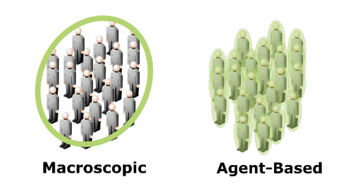
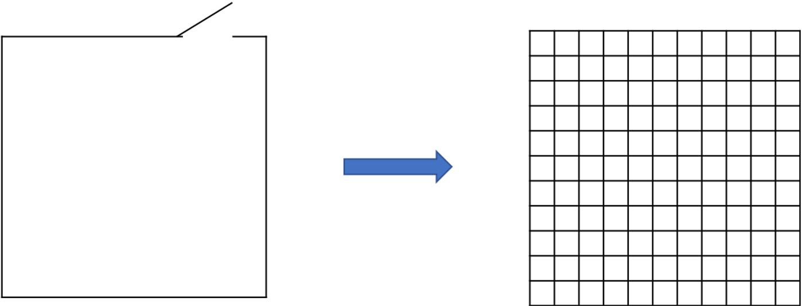
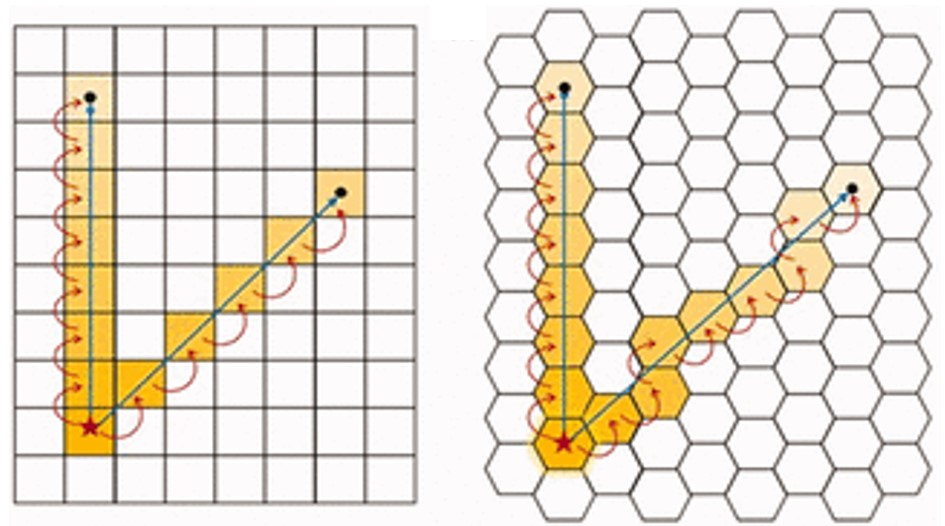
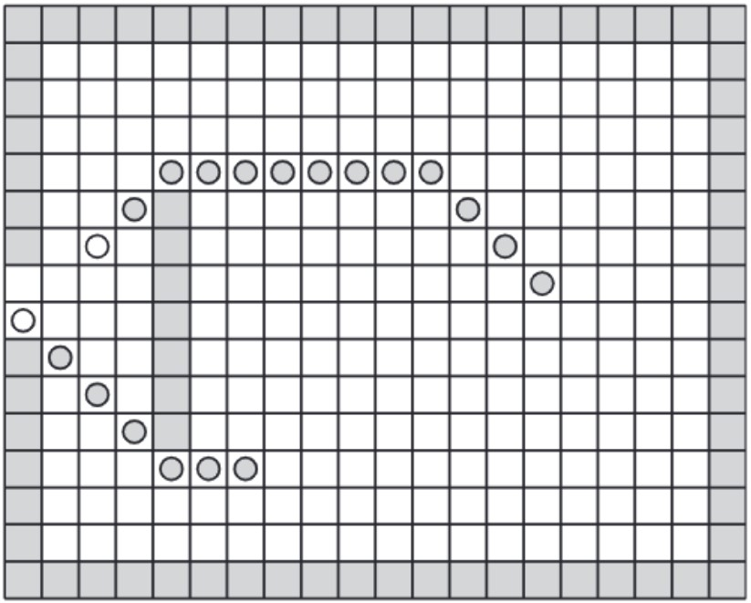
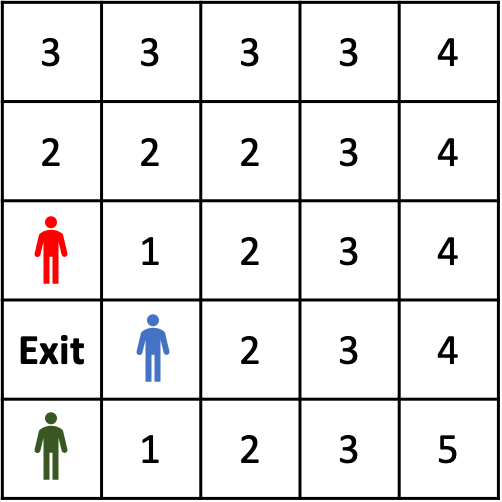

{{sectionSubtitle[0]}}
Computer simulation models, such as Cellular Automata (CA) models, can be used to simulate the movement of people in the built environment. Simulation modelling is an important part of Pedestrian and Evacuation Dynamics (PED), and is useful for a variety of purposes. This includes ensuring the safety of building occupants during emergency evacuations, predicting traffic flows through commercial areas, and optimising design to reduce queuing and bottlenecks in densely populated buildings.
There are two main ways in which pedestrians can be represented in computer simulation models. Macroscopic models reproduce crowd behaviour by simulating a group of pedestrians as a fluid. An example of a macroscopic model is the Hydraulic Model – see the Hydraulic Model Visualisation for a more detailed explanation of this kind of simulation model.
Agent-based models (ABM) are an alternative method of representing pedestrians in evacuation simulation models. In ABMs, pedestrians are simulated as individuals, with their own characteristics and behaviours, rather than as simply part of a whole ‘crowd’. CA models, which this visualisation describes, are considered to be ABMs, due to the method in which they simulate pedestrians and the environment.
PED simulation models typically require a variety of inputs to run. The layout of the building, and the number of occupants in the building are basic requirements for any pedestrian simulation model. More sophisticated models also include specific occupant and environment characteristics such as evacuee decision-making behaviours, and representation of stairs and other kinds of environmental features.
As previously stated, CA models can be used to simulate pedestrian behaviour under both normal and emergency (evacuation) scenarios. When using a CA model to investigate emergency evacuations, one of the most useful outputs of the model is a parameter known as the total evacuation time. This is the time it takes for all pedestrians represented in a model to have evacuated the building, or moved to another safe location. This parameter is particularly useful for evaluating the fire safety of buildings through performance-based design concepts [link to further explanation of PBD & fire safety].
{{sectionSubtitle[1]}}
Pedestrians in a CA model are represented as ‘agents’ that have the ability to move and make decisions individually, rather than as part of a larger crowd. But how is the environment upon which these agents move in a CA model represented? Well –the clue is in the name!
In a CA model the environment is represented as a set of cells. Any 2-dimensional building or room layout input into the model will be represented in this way. This is achieved simply by dividing the total area into smaller cells, each representing a smaller portion of the environment.
One cell can only be occupied by one agent at any point in timeduring the simulation. Inpedestrian dynamics CA models, cells typically represent real world dimensions of approximately 1m x 1m.
Agents move position as the model progresses by transitioning into one of the neighbouring cells of the cell that they currently occupy. A set of rules known as transition rules describe which cell agents can move into, and also which cells agents are more likely to move into. They are also used to solve conflicts, for example if two agents attempt to move into the same cell.
As a note, cells are typically square in shape, meaning that agents can have up to 8 neighbouring they can choose to move into. However, other cell shapes are possible in CA models, such as hexagons which can have up to 6 neighbouring cells.
Figure adapted from Nugraha et al (2020)1. 
{{sectionSubtitle[2]}}
Agents in a CA model tend to move in particular direction as time progresses through the simulation. The agent’s target destination, which influences the direction they move, is determined by initial parameters input into a CA model. For example, if the model is being used to represent an emergency evacuation, the agent’s target destination may be a doorway, so that the agents will move towards where an exit is located.
But how do agents in a CA model determine which direction they need to move in? One popular
method of accomplishing this is through the concept of a distance map, also known as
a floor field. Thedistance map, or floor field,represents the space using numerical
values
assigned to the cells in the model, according to the total travel distance needed to reach
the target from that particular cell. The map only has to be calculated once at the
beginning of the simulation. For simple architectural geometries, the Euclidian
(straight-line) distance can be used to calculate the distance map. In the image below, the
target cell has been assigned a value of 256, and all other cells have been assigned a value
between 1 and 256 representing how far they are away from the target (closer cells have
higher numbers).

The distance map will be referred to when agents are choosing which cell to move into for the next time step in the model. Of the possible neighbouring cells, agents will choose to move into the cell with the highest number, representing the shortest distance away from the target. On some occasions, multiple neighbouring cells will be equidistant away from the agent’s target. A specific transition rule is required for this scenario, to determine which cell the agent will actually move into. A common choice is simply for the agent to randomly select from all possible cells with the shortest distance value.
For example, the agen tin this cellular automata model could move to the cell directly to its left, or to the cell above it and to the left. Both of these cells are the same distance away from the exit, so a transition rule is required to determine which of these cell the agent will move into on this timestep of the model.
Of course, in many cases, rooms and other areas inside buildings will not have completely clear paths that allows people to walk directly towards an exit. There are likely to be obstacles in their way, which will block them from moving in certain areas in the room. A CA model is able to represent these obstacles by not allowing agents to move into certain cells. The presence of obstacles will also affect the calculation of the distance map in the model, as this representsthe most direct path to an exit considering that they will not be allowed to move into certain cells representing where an object is present.
The diagram above (Varas et al., 2007) shows the trajectory of two agents(grey circles) in a CA model moving around an obstacle located in front of anexit door. The distance map calculated for this geometry ensures the pedestrians move around the object, whilst still taking the most direct path towards the exit.
{{sectionSubtitle[3]}}
In most evacuation or pedestrian dynamics scenarios, we are interested in determining the behaviour of a crowd of people, not just one single person. It is easy to represent a crowd in a CA model, as each person in the crowd can be represented as an individual agent in the model.
With multiple agents, more algorithmic rules are required to determine which agent will move into a particular cell if a conflict arises. Multiple agents may wish to move into the same cell on the same timestep, but only one can end up in that cell, as the cells can only be occupied by one agent at a time. The most simple choice for a transition rule to solve this conflict is to randomly assign one of the conflicted agents to that cell at the end of the timestep, with the others not changing their position. For example, in the image below, both the red, blue and green agent all want to move into the ‘exit’ cell. If a random transition rule is used, the blue agent may be randomly assigned to move into this cell, and the red and green agents will remain in the cells they are currently in until the next timestep.
The fact that many cells are already occupied and therefore ‘blocked’ by agents means that it will take a longer time for agents to reach an exit in the model than if other agents weren’t present. Therefore, the overall timeit takes all agents in the model to reach the exit is likely to increase when more agents are initialised in the model.
In more complicated CA models, each agent can be defined to have their own characteristics which may affect their behaviour. For instance, some agents could either be ‘selfless’ or ‘selfish’. In conflict scenarios where more than one agent wishes to move into the same cell, the more ‘selfish’ agents can take priority over the ‘selfless’ agents to move into that cell.
{{sectionSubtitle[4]}}
The CA model presented in this visualisation is a very basic kind of CA model. It could be extended or upgraded in various ways, in order to make the agent’s behaviour, or the way they interact with the environment, more realistic.
One way in which a CA model can be extended is to define each agent in the model to have individual characteristics which affect their behaviour. For instance, agents could be chosen to be either be ‘selfless’ or ‘selfish’. In conflict scenarios where more than one agent wishes to move into the same cell, the more ‘selfish’ agents can take priority over the ‘selfless’ agents to move into that cell.
Another example of how a CA model can be extended relates to group behaviour, and the distance map calculated in the model. In order to represent an evacuation scenario in which evacuees do not know the location of exits in the room, the way the distance map is calculated can be altered. It can instead be calculated based on where other agents are located in the environment. Agents are then more likely to move towards locations where other groups of agents are, as these areas are more likely to be near exits.
The following references provide more information about cellular automata models, their use in evacuation simulation modelling, and the possible extensions to these models. Much of the text, and some of the diagrams presented in this visualisation were sourced or inspired by these references.
- Evacuation Modelling Trends (2016), Springer International. Eds: Cuesta, A., Abreu, O., and Alvear, D. ISBN: 978-3-319-20707-0
- Kuligowski, E. D. and Peacock, R. (2005) A Review of Building Evacuation Models.
- Vermuyten, H. et al.(2016) ‘A review of optimisation models for pedestrian evacuation and design problems’, Safety Science. Elsevier Ltd, 87, pp. 167–178. doi: 10.1016/j.ssci.2016.04.001.
- Yang, L., Fang, W., Huang, R., and Deng, Z. (2002) ‘Occupant evacuation model based on cellular automata in fire’, Chinese Science Bulletin 47 (14) pp.1484-1488.
- Yuan, W., and Tan, K.H. (2007) ‘An evacuation model using cellular automata’, Physica A 384 (2007) pp.549-566
- Song, W., Yu, Y., Fan, W., and Heping, Z. (2005) ‘A cellular automata evacuation model considering friction and repulsion.’ Science in China Series E. Engineering & Materials Science 48 (4) pp.403-413
- Klüpfel, H. and Meyer-König, T. (2005) ‘Simulation of the Evacuation of a Football Stadium Using the CA Model PedGo’, Traffic and Granular Flow ’03, pp. 423–428--. doi: 10.1007/3-540-28091-x_43.
- Wang, J. et al.(2015) ‘Modeling and simulating for congestion pedestrian evacuation with panic’, Physica A: Statistical Mechanics and its Applications. Elsevier B.V., 428, pp. 396–409. doi: 10.1016/j.physa.2015.01.057.
- Manley, M. et al.(2011) ‘Modeling Emergency Evacuation of Individuals with Disabilities in a Densely Populated Airport’, Transportation Research Record: Journal of the Transportation Research Board, 2206, pp. 32–38. doi: 10.3141/2206-05.
- Nugraha, Blainey & Nash (2020)‘On the consistency of urban cellular automata models based on hexagonal and square cells’Environment and Planning B: Urban Analytics and City Science0(0) 1-16
- Varas, A., Cornejo, M.D., Mainemer, D., Toledo, B., Rogan, J., Munoz, V., Valdiva, J.A. (2007), ‘Cellular automaton model for evacuation process with obstacles’, Physica A: Statistical Mechanics and its Applications, 382 (2) pp.631-642 https://doi.org/10.1016/j.physa.2007.04.006